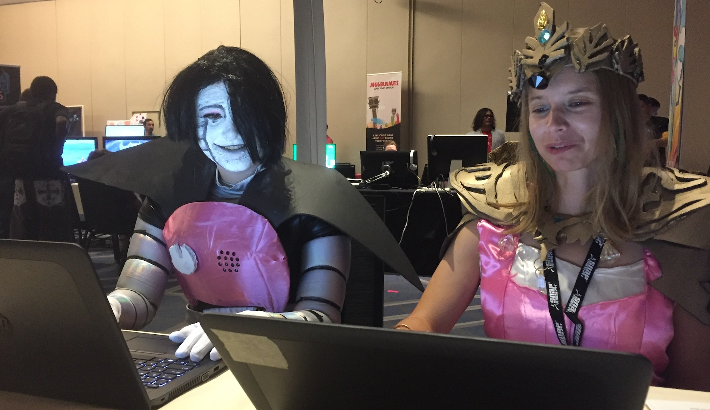

idtio is a multiplayer web game about an island that is home to nine isolated characters searching for something called "the void". Users can control an avatar to explore the world, interact with the scenery, collect resources to unlock the secrets of "the void" and have conversations with other characters. It was created with my drawing software lines.
Play idtio now at idtio.owen.cool. It's multiplayer, so you may want to invite a friend or two.
idtio was first shown at 2DCon in Minneapolis, MN.
